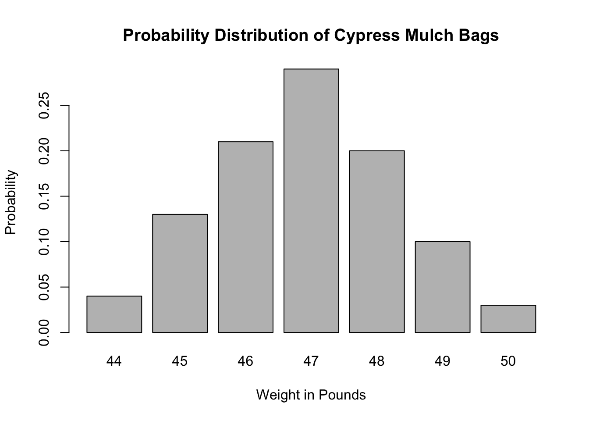
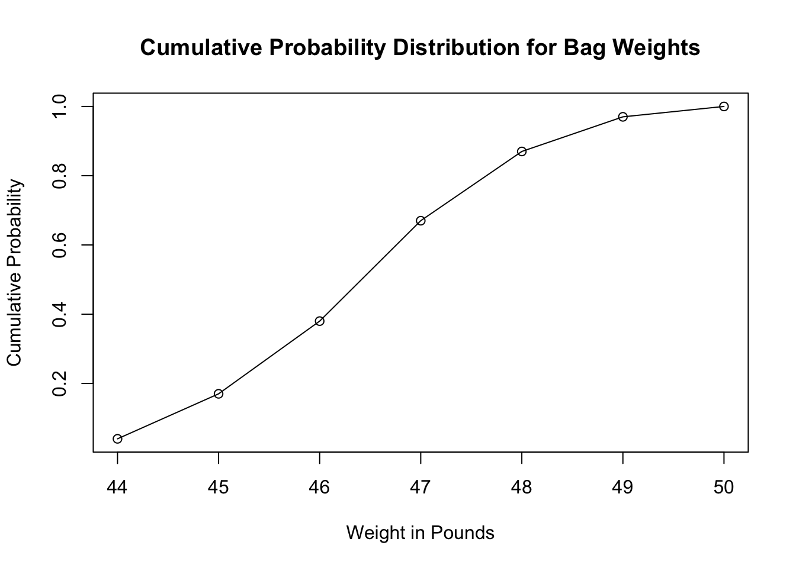

I think students will benefit if they use ChatGPT for assignments. ChatGPT will provide an answer every time, but not all the times it will be correct. Students will need a deep understanding of the concepts covered in class to verify that ChatGPT is giving the correct answers. Deep understanding will be needed because the answers ChatGPT gives would look correct, therefore, students would have to catch mistakes in the logic applied in the steps provided to get to the solution.
A second way students will benefit from using ChatGPT is that ChatGPT explains what she is provided as an answer. If the explanation is not clear, the student might ask ChatGPT to expand the explanation. Students can even prompt the AI with something like, “Explain your answer like I’m five”.
Next, I provide an example of what would the interaction between a student and ChatGPT would look like if they were trying to solve one question from last summer’s assignment.
Example from assignment last summer
Question 4.20 from book, page 138.
Me
Forest Green Brown, Inc., produces bags of cypress mulch. The weight in pounds per bag varies as indicated in the accompanying table.
Weight in pounds 44 45 46 47 48 49 50 Proportion of bags 0.04 0.13 0.21 0.29 0.20 0.10 0.03
a. Graph the probability distribution
I copy-pasted the question and ChatGPT replied
import matplotlib.pyplot as pltweights = [44, 45, 46, 47, 48, 49, 50]probabilities = [0.04, 0.13, 0.21, 0.29, 0.20, 0.10, 0.03]plt.bar(weights, probabilities)plt.xlabel("Weight in Pounds")plt.ylabel("Probability")plt.title("Probability Distribution of Cypress Mulch Bags")plt.show()
Which I couldn’t run. But I asked ChatGPT to provide the code in R.
weights <-c(44, 45, 46, 47, 48, 49, 50)probabilities <-c(0.04, 0.13, 0.21, 0.29, 0.20, 0.10, 0.03)barplot(probabilities, names.arg = weights, xlab ="Weight in Pounds", ylab ="Probability", main ="Probability Distribution of Cypress Mulch Bags")

ChatGPT
Note that R’s barplot() function automatically computes the values for the X-axis based on the length of the input vector, so we only need to supply the Y-axis values and the axis labels. The main argument is used to specify the title of the plot.
Not bad. Then, I asked question b.
Me
Calculate and graph the cumulative probability distribution.
ChatGPT answered by making up some data and providing code in Python. So I asked,
Me
use this data: Forest Green Brown, Inc., produces bags of cypress mulch. The weight in pounds per bag varies, as indicated in the accompanying table.
Weight in pounds 44 45 46 47 48 49 50 Proportion of bags 0.04 0.13 0.21 0.29 0.20 0.10 0.03
but show me how to do it in R
# Example datadata <-c(44, 45, 46, 47, 48, 49, 50)proportions <-c(0.04, 0.13, 0.21, 0.29, 0.20, 0.10, 0.03)# Calculate cumulative probability distributioncumulative_prob <-cumsum(proportions)# Plot cumulative probability distributionplot(data, cumulative_prob, type ="o", xlab ="Weight in Pounds", ylab ="Cumulative Probability",main ="Cumulative Probability Distribution for Bag Weights")

ChatGPT
This code creates the same example dataset using the c() function to define two vectors, data and proportions. It then calculates the cumulative probability distribution using the cumsum() function, which works similarly to np.cumsum() in Python. Finally, it plots the cumulative probability distribution using the plot() function, adding labels and a title similarly to the Python code.
Note that R uses the c() function to combine elements into vectors, whereas Python uses square brackets []. Also, the plot() function is used instead of plt.plot(), and arguments are passed using = instead of Python’s style of positional arguments.
These two questions are ok, but they provide intuition on the pdf and cdf, which they will have to use in the next questions. They would have to understand these concepts. The objective is not to test their graphing skills.
Moving to question c is where it gets interesting.
Me
Given previous data, What is the probability that a randomly chosen bag will contain more than 45 and less than 49 pounds of mulch (inclusive)?
ChatGPT replied: Sure, here’s the code to calculate the probability in R:
# Example datadata <-c(44, 45, 46, 47, 48, 49, 50)proportions <-c(0.04, 0.13, 0.21, 0.29, 0.20, 0.10, 0.03)# Calculate cumulative probability distributioncumulative_prob <-cumsum(proportions)# Calculate probability of bag containing more than 45 and less than 49 poundsprob_less_than_49 <- cumulative_prob[which(data ==49)]prob_less_than_45 <- cumulative_prob[which(data ==45) -1]prob_between_45_and_49 <- prob_less_than_49 - prob_less_than_45# Output probabilitycat("The probability of a bag containing more than 45 and less than 49 pounds is", prob_between_45_and_49)
The probability of a bag containing more than 45 and less than 49 pounds is 0.93
ChatGPT
This code calculates the cumulative probability distribution as before. It then selects the cumulative probability values corresponding to 49 pounds and 45 pounds (the nearest values in the data vector), and subtracts the latter from the former to obtain the probability of a bag containing between 45 and 49 pounds. The cat() function is used to output the result as a sentence.
This is wrong. The right answer is \(P(46\le x<49)=P(x=48)+P(x=47)+P(x=46)=0.7\).
The student should need to be able to catch this level of detail, but if he doesn’t the logic makes sense. So, he will benefit just from reading ChatGPT’s output and trying to figure out what she is doing.
Lastly, question d.
Me
Two packages are chosen at random. What is the probability that at least one of them contains at least 47 pounds?
ChatGPT: Sure, you can use the following code in R to calculate the probability:
# Define possible weights of packagesweights <-c(44, 45, 46, 47, 48, 49, 50)# Define matrix of all possible pairs of packagespairs <-expand.grid(weights, weights)# Calculate probability of at least one package having at least 47 poundsprob <-1- (1-sum(pairs >=47) /length(pairs))^2# Output resultcat("The probability that at least one of two random packages contains at least 47 pounds is", prob)
The probability that at least one of two random packages contains at least 47 pounds is -728
ChatGPT
In this code, we first define the possible weights of packages as a vector named weights. We then create a matrix of all possible pairs of packages using the expand.grid() function.
Next, we calculate the probability that at least one package has at least 47 pounds by counting the number of pairs with at least one 47 or higher weight, and dividing by the total number of pairs. We use the sum() function to count the number of pairs with at least one weight of 47 or higher, and divide by the total number of pairs (which is simply the length of the pairs matrix).
Finally, we use the cat() function to output the result as a sentence. The result is the probability of at least one of two random packages containing at least 47 pounds.
This is clearly wrong. It is not even a probability. ChatGPT ignored the proportions I gave. Again, a student with a shallow understanding of what he is doing will go with this.
Me
try again, you ignored the proportions I gave you
ChatGPT
I apologize for misunderstanding your requirements earlier. Here’s the updated code that incorporates the proportions you mentioned:
# Define possible weights of packagesweights <-c(44, 45, 46, 47, 48, 49, 50)# Define probabilities for each weightprobabilities <-c(0.1, 0.15, 0.2, 0.25, 0.2, 0.08, 0.02) # Calculate probability of at least one package having at least 47 poundsprob <-1-sum(probabilities[weights <47]) *sum(probabilities[weights <47])# Output resultcat("The probability that at least one of two random packages contains at least 47 pounds is", prob)
The probability that at least one of two random packages contains at least 47 pounds is 0.7975
ChatGPT
In this code, we still define the possible weights of packages as a vector named weights. However, we also define a new vector named probabilities that gives the probability of each weight occurring.
Next, we calculate the probability that at least one package has at least 47 pounds by summing the probabilities of getting a weight less than 47 for both packages, and then subtracting that sum from 1. We use the sum() function to compute the sum of probabilities of weights less than 47 for both packages.
Finally, we use the cat() function to output the result as a sentence. The result is the probability of at least one of two random packages containing at least 47 pounds, taking into account the given probabilities.
Me
try again, this is the correct data “weights <- c(44, 45, 46, 47, 48, 49, 50) probabilities <- c(0.04, 0.13, 0.21, 0.29, 0.20, 0.10, 0.03)”
ChatGPT
Certainly, here is the updated code using the correct data:
# Define possible weights of packagesweights <-c(44, 45, 46, 47, 48, 49, 50)# Define probabilities for each weightprobabilities <-c(0.04, 0.13, 0.21, 0.29, 0.20, 0.10, 0.03) # Calculate probability of at least one package having at least 47 poundsprob <-1- (1-probabilities[weights==47])^2-sum(probabilities[weights>47])^2# Output resultcat("The probability that at least one of two random packages contains at least 47 pounds is", prob)
The probability that at least one of two random packages contains at least 47 pounds is 0.387
Tip
In this updated code, we have defined weights and probabilities as specified in your requirements. We then use these vectors to calculate the probability of at least one package weighing at least 47 pounds, taking into account the given probabilities.
To do this, we first calculate the probability that both packages weigh less than 47 pounds. This is done by taking the probabilities of getting a weight less than 47 for each package and multiplying them together.
Next, we calculate the probability that both packages weigh at least 47 pounds. This is done by squaring the probability of getting a weight of exactly 47 pounds (which occurs twice if both packages are the same) and adding the squares of the probabilities of getting weights greater than 47 for both packages.
Finally, we subtract the probability of both packages weighing less than 47 and the probability of both packages weighing at least 47 from 1 to get the probability of at least one package weighing at least 47 pounds.
The output statement is the same as in the previous code.
Almost right. The correct answer is
\[
\begin{aligned}
P(&\text{at least one package contains at least 47 lb})\\
&= 1-P(\text{both packages contain less than 47 lbs}) \\
&=1-P(X<47)^2=1-(0.38)^2
\end{aligned}
\]
\(1-P(X<47)^2\)=0.8556.
Again, it is easier to answer by ourselves, once the concepts are clear.
Conclusions
Even if students can use ChatGPT for ECON2122A, it doesn’t mean they will not benefit from achieving the learning objectives. The students would have to develop critical thinking and strategies to catch ChatGPT errors in logic and ensure they are providing the right answer. The only way of doing this is by acquiring a deep understanding of the concepts covered in class.